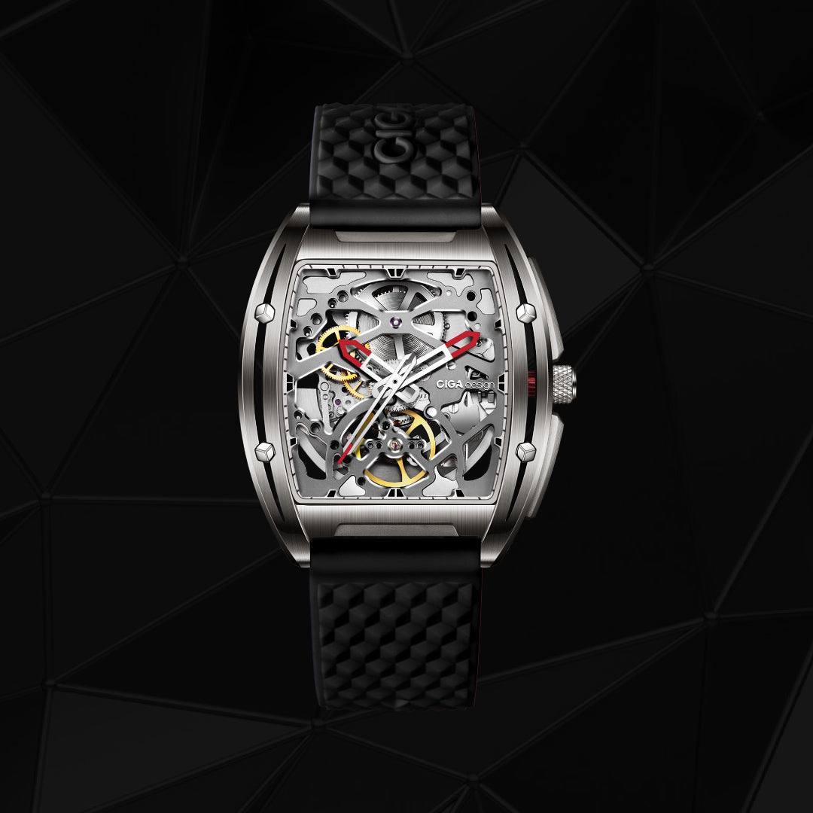
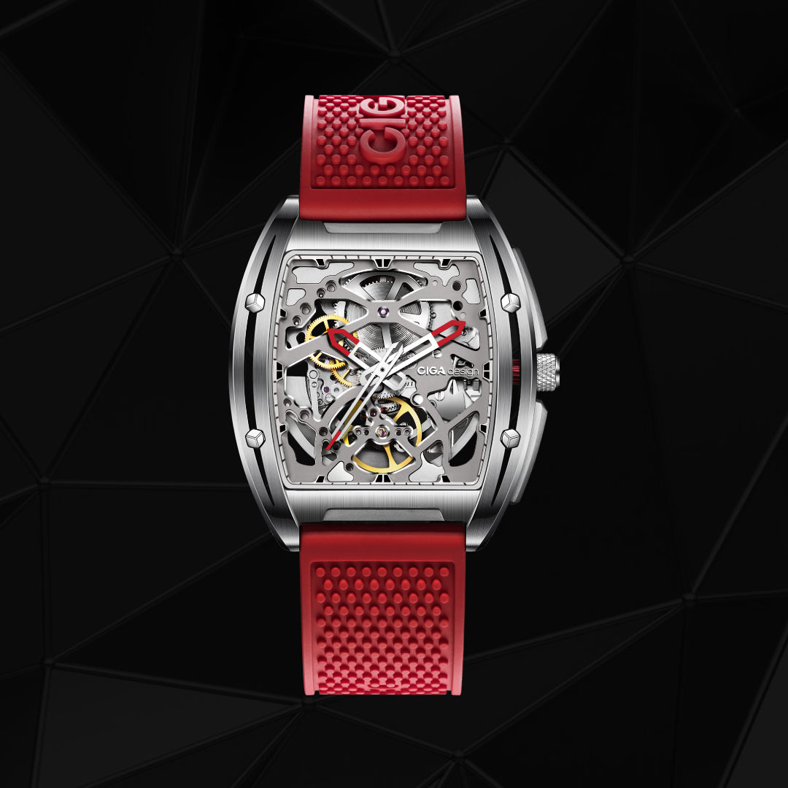
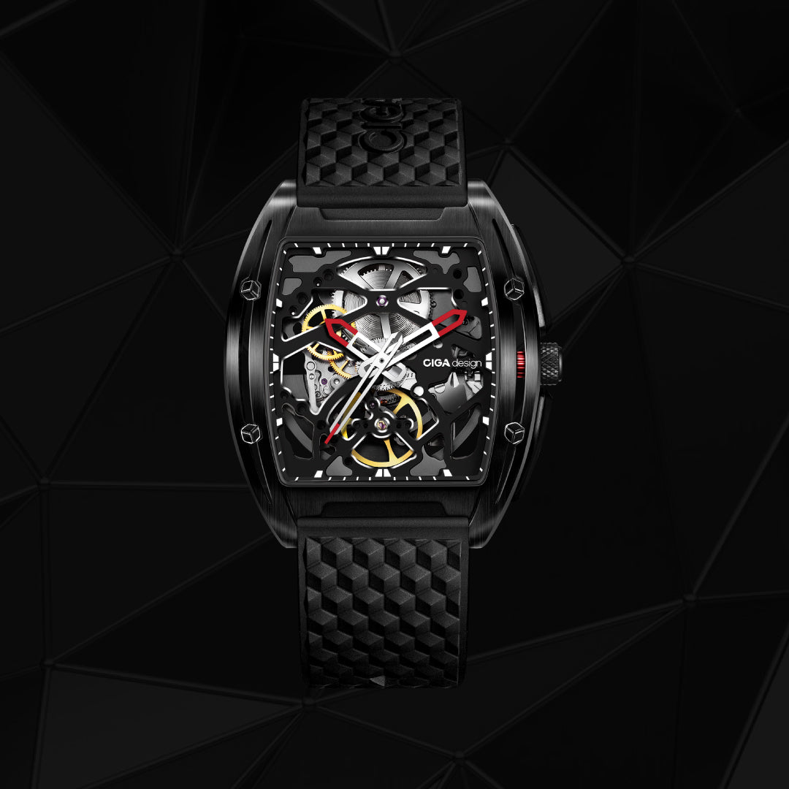
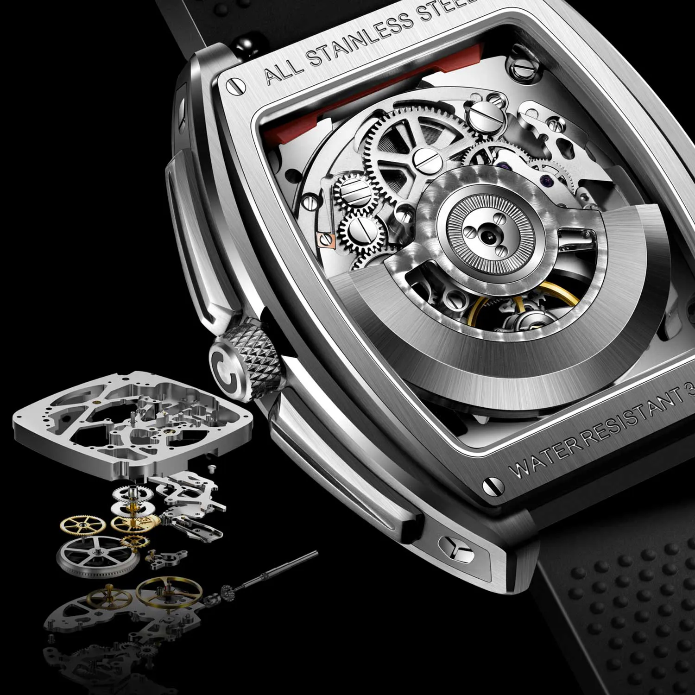

Vencedor do German Design Award 2020, o Edge combina caixa tonneau integrada e design skeleton de dupla face. É uma leitura mais limpa, arquitetônica e contemporânea da relojoaria mecânica da CIGA design.
Vencedor · 2020
O Edge trabalha a linguagem do tonneau integrado com mais limpeza visual, estrutura skeleton dos dois lados e um desenho que privilegia proporção e materialidade.

O Edge chama atenção pela caixa tonneau totalmente integrada, com laterais contínuas e leitura mais fluida entre corpo e pulseira. No material oficial, a CIGA enfatiza a sensação de peça única, quase esculpida a partir de um único volume.
A proporção compacta, o uso de materiais distintos e a mistura de superfícies ajudam a explicar o reconhecimento do German Design Award 2020. O Edge não tenta parecer clássico: ele assume uma identidade mais industrial e mais precisa.
A CIGA ainda trabalha com diferentes variantes de material, incluindo aço 316L, opções com DLC e pulseiras de silicone de troca rápida, o que reforça a versatilidade visual da coleção.

Em vez de um mostrador fechado, o Edge trabalha com abertura frontal e traseira para deixar o movimento aparente dos dois lados. Isso aproxima o relógio do padrão visual do Blue Planet em termos de apelo mecânico e contemplativo, mas com uma linguagem muito mais geométrica.
O conjunto mecânico divulgado pela marca trabalha com 24 joias, frequência de 21.600 vph e aproximadamente 40 horas de reserva de marcha. O caseback em safira amplia essa leitura e transforma o verso em parte ativa da experiência.
O valor do Edge está na coerência entre forma e mecânica: tudo o que aparece no relógio parece ter sido desenhado para continuar o fluxo da caixa, sem excesso ornamental.
Reconhecimento oficial do júri alemão pelo design inovador e identidade visual única, um dos prêmios de design mais cobiçados do mundo.
Frente e verso revelam o movimento, reforçando a proposta de um relógio mecânico que assume sua engenharia como parte do design.
Vidro de safira sintética frontal e no caseback, permitindo contemplar o movimento automático de ambos os lados do relógio.
Revestimento luminescente suíço nos ponteiros e índices para legibilidade garantida em qualquer condição de iluminação.
Cada especificação do Edge foi pensada para sustentar um design premiado com performance mecânica de alto nível.

| Tamanho da Caixa | 42mm × 46mm (tonneau integrado) |
| Espessura da Caixa | 11,8mm |
| Material da Caixa | Aço inoxidável 316L / variantes com DLC |
| Tipo de Movimento | Automático customizado pela CIGA design |
| Frequência | 21,600 vph |
| Reserva de Marcha | Aproximadamente 40 horas |
| Joias | 24 joias |
| Construção | Skeleton frontal e traseiro |
| Vidro | Safira sintética (frente e caseback) |
| Resistência à Água | 3 ATM (30 metros) |
| Largura da Pulseira | 22mm |
| Material da Pulseira | Silicone com sistema quick-release |
| Comprimento da Pulseira | 250mm |
O German Design Award validou exatamente o ponto forte do Edge: um desenho original, coerente e facilmente reconhecível. A revisão desta página prioriza esse argumento, sem acrescentar recursos não confirmados no material oficial.
Informações essenciais para que sua apresentação do Edge seja precisa, autêntica e de alto impacto narrativo.
Como embaixador do Edge, você está apresentando um relógio com reconhecimento internacional de design. Cada detalhe comunicado deve refletir o nível de excelência que conquistou o German Design Award. Siga estas diretrizes para transmitir a essência da peça com a autoridade que ela merece.
Cada ângulo narrativo abaixo foi construído para maximizar o impacto do seu conteúdo sobre o Edge.
| # | Direcionamento | Foco Narrativo | Base do Script (Exemplo) |
|---|---|---|---|
| 01 | O Prêmio que Valida | German Design Award 2020 como prova de excelência. | "Esse relógio não é só bonito, ele venceu o German Design Award 2020. Um júri internacional de especialistas escolheu o Edge como referência global de design." |
| 02 | A Silhueta Tonneau | A forma histórica reimaginada para o presente. | "A forma tonneau tem mais de 100 anos na relojoaria suíça. A CIGA design pegou esse clássico e reinventou com precisão contemporânea, e ganhou um prêmio por isso." |
| 03 | Skeleton de Dupla Face | O movimento visível como linguagem central. | "O Edge não depende de mostrador fechado para criar impacto. Frente e verso revelam a mecânica como parte do desenho." |
| 04 | Caseback em Safira | O movimento visível como segundo mostrador. | "A maioria dos relógios mostra o mostrador. O Edge mostra os dois lados. Vire o pulso e você vê o calibre automático funcionando em tempo real através do caseback em safira." |
| 05 | Acabamento Duplo | Polido e escovado na mesma caixa. | "Olha como a luz joga diferente em cada face dessa caixa. Um lado polido como espelho, outro escovado como cetim. É uma escolha de design que transforma o relógio ao longo do dia." |
| 06 | Calibre Automático | Mecânica customizada para a arquitetura da peça. | "Com 24 joias, 21.600 vph e 40 horas de reserva, o Edge sustenta o visual escultural com uma base mecânica coerente com a proposta do modelo." |
| 07 | Super-LumiNova® | Legibilidade em qualquer condição de luz. | "Mesmo no escuro, o Edge entrega. O Super-LumiNova® nos ponteiros e índices mantém a leitura do tempo clara e elegante em qualquer ambiente." |
| 08 | Quick-Release | Versatilidade sem perder o desenho integrado. | "A pulseira quick-release ajuda a reforçar uma qualidade importante do Edge: ele muda de presença visual sem perder identidade." |
| 09 | Presente Para Homens | O Edge como presente masculino de impacto. | "Se você quer dar um presente que impressiona, o Edge tem o que todo homem quer: design reconhecido internacionalmente, movimento mecânico e uma história para contar." |
| 10 | Embalagem Literária | O unboxing em formato de livro como experiência. | "A caixa do Edge chega em embalagem formato livro com papel reciclado premium. A experiência começa antes de colocar o relógio no pulso." |
Imagens oficiais do Edge disponíveis para uso em seu conteúdo.


São sete acabamentos no catálogo brasileiro, do clássico industrial ao titânio colorido. A escolha define o tom de qualquer publicação.
Compre direto no site oficial da CIGA design Brasil. Garantia, parcelamento e envio para todo o país pela JG Importadora.
Comprar no Site Oficial usecigadesign.com.br